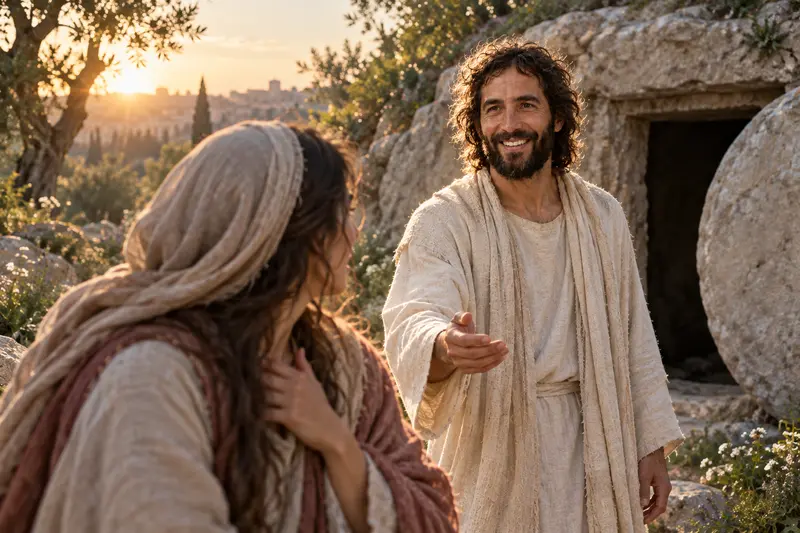
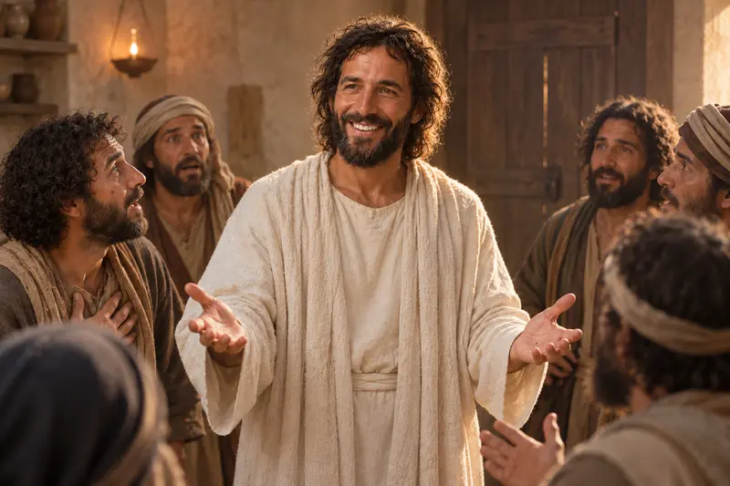
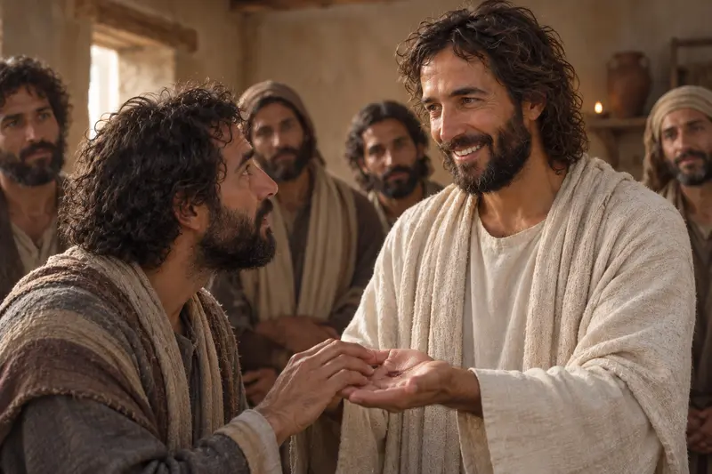
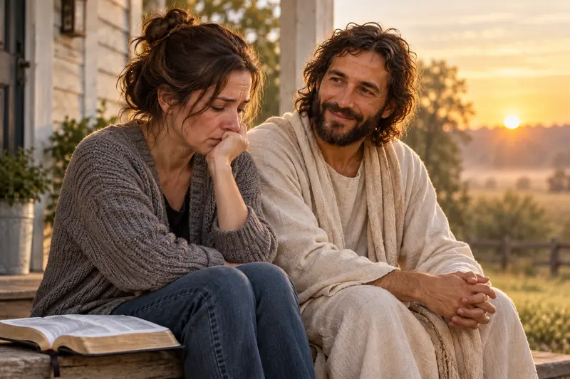
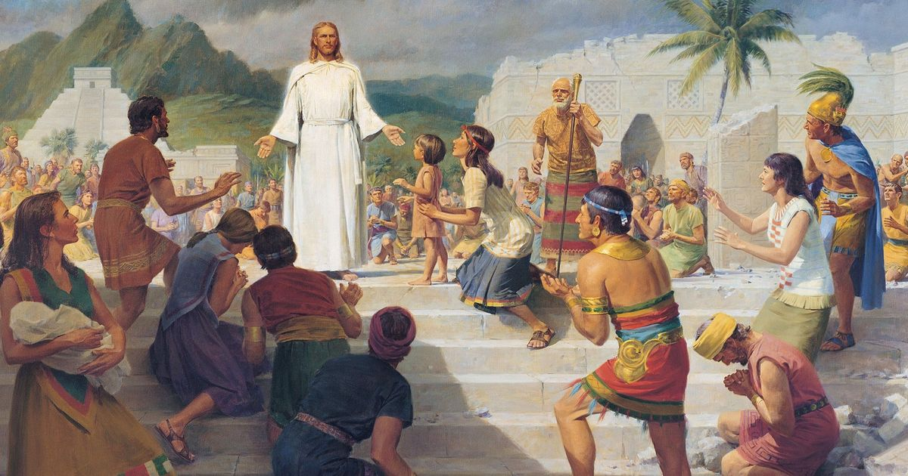
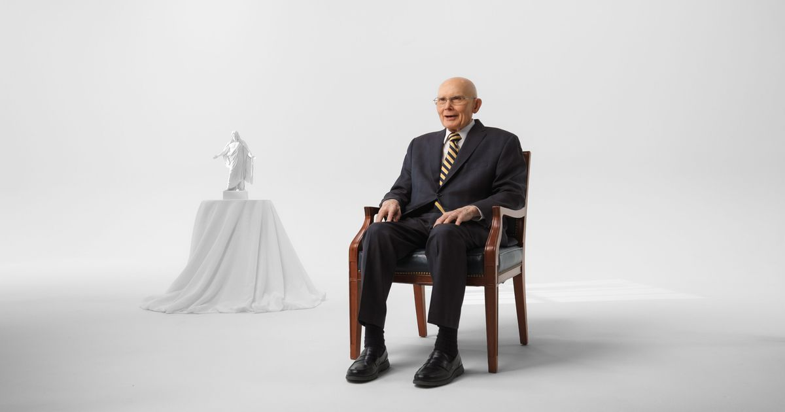

Notice the light, the Savior's expression, and where your attention settles first.
The portrait meets us with light, warmth, and an open expression. Christian hope rests on the witness that Jesus Christ rose from the tomb and still calls people by name.
A path through this study
Come Near to the Living Christ
Begin with the face in the portrait. The light is bright, yet the Savior's expression is gentle. Nothing in the image asks us to hurry past Him. Let that first impression accompany you into the Resurrection accounts, where grief, fear, recognition, and joy all unfold in the presence of the risen Lord.
Walk through John 20 with Mary Magdalene, the gathered disciples, and Thomas.
Name one way belief in a living Savior changes the way you meet this day.
Scripture study
Follow the Witnesses in John 20
John 20:1-18 begins before the morning is clear. Mary comes to the tomb carrying grief and discovers that the stone has been moved. She does not recognize Jesus until He speaks her name. The change in the account is deeply personal: sorrow becomes recognition, and recognition becomes a message she is trusted to carry.
Continue with John 20:19-31. The disciples are behind closed doors when Jesus comes among them and speaks peace. Thomas receives time, an invitation to see, and a reason to believe. John closes by telling readers why these signs were written: that they might believe Jesus is the Christ and find life in His name.
Why the Resurrection reaches beyond one morning
Paul connects Christ's Resurrection with the promised resurrection of humankind in 1 Corinthians 15:12-22. The hope is not that death is insignificant. The hope is that death will not have the final word. That promise can be precious even when grief is still present.
Look again
Four Images of His Continuing Care
Each image turns toward a different human need. Open any artwork to explore its scripture and study options, view the full-size picture, or continue the lesson.
{kind=link}

{kind=link}

{kind=link}

{kind=link}

Quiet reflection
Let the Witness Become Personal
These prompts are invitations, not a test. Open the one that meets you today.
When have I felt known by name?
Return to Mary in John 20:11-18. Sit for a moment with the change that comes when Jesus speaks her name. Write the name of someone who may need to feel remembered today.
What closed door am I standing behind?
The disciples received the words “Peace be unto you” while the doors were shut. Name one fear you can bring honestly to Christ, without pretending it has already disappeared.
What does the Living Christ invite me to do next?
Read one paragraph of The Living Christ. Choose one truth about the Savior to carry into prayer, worship, or service this week.
Watch, read, and reflect
A companion for your study
These official Church resources offer another way to explore this subject. Read or watch at your own pace, then return to the passages above.

Church video
A Powerful Testimony of the Resurrection of Jesus Christ
Listen for the witness of the living Savior, then return to the Resurrection accounts in John 20.
The Church of Jesus Christ of Latter-day Saints

Church video
He Is Risen! A Special 2025 Easter Season Message from the First Presidency
Reflect on the living Christ and the hope made possible through His Resurrection.
The Church of Jesus Christ of Latter-day Saints
Keep walking
Where Would You Like to Go Next?
Know Jesus Christ
Continue into His identity, mission, Atonement, and invitation to follow Him.
Hope Beyond Death
Study resurrection and eternal life with tenderness for grief and unanswered questions.
Walk with His Peace
Carry the witness of the living Christ into a study of trust in the middle of uncertainty.